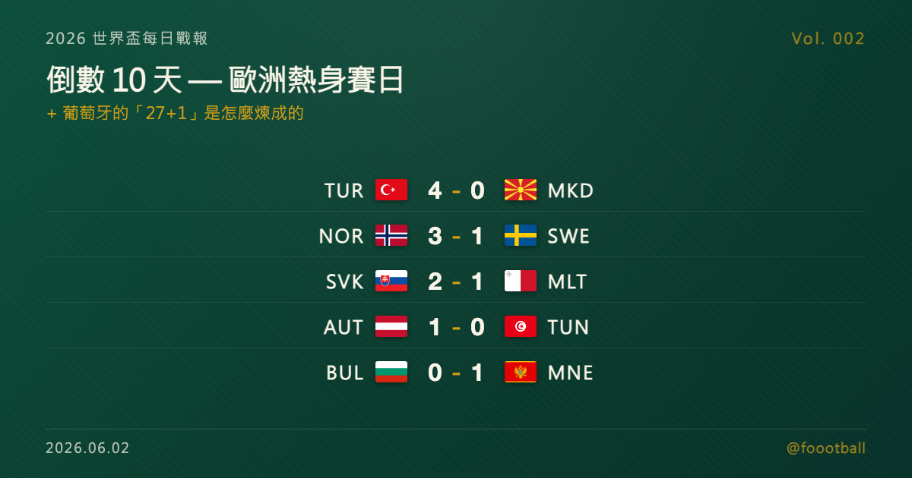

世界盃倒數 10 天：歐洲熱身賽日 + 葡萄牙的「27+1」是怎麼煉成的

2026 世界盃每日戰報 Vol. 002
§1 即時比分戰報（6/1 全球熱身賽）
| 賽事 | 比分 | 場館 | 焦點 |
|---|---|---|---|
| 🇹🇷 土耳其 — 🇲🇰 北馬其頓 | 4 - 0 | Istanbul Ülker Stadyumu | 柯卡 2'、烏松 16'、葛爾 53'、伊爾梅茲 70' |
| 🇧🇬 保加利亞 — 🇲🇪 蒙特內哥羅 | 0 - 1 | Plovdiv Hristo Botev | 塞庫利奇 68' 致勝 |
| 🇸🇰 斯洛伐克 — 🇲🇹 馬爾他 | 2 - 1 | Dunajská Streda MOL Aréna | 哈拉斯林 9'、加爾奇克 90+7' 絕殺;姆邦 37'(MLT) |
| 🇳🇴 挪威 — 🇸🇪 瑞典 | 3 - 1 | Oslo Ullevaal Stadion | 斯特蘭德·拉爾森 8' / 37' 兩響、努薩 18';伊薩克 76'(SWE) |
| 🇦🇹 奧地利 — 🇹🇳 突尼西亞 | 1 - 0 | Vienna Ernst-Happel | 薩比策 63'(AUT 37' 紅牌十人應戰) |
5 場全歐洲對決（除了奧地利 vs 突尼西亞），均為 6/11 開幕前最後一波熱身。土耳其主場 4-0 大勝北馬其頓火力全開，挪威主場連扳兩記擊敗北歐宿敵瑞典，斯洛伐克補時絕殺逆轉馬爾他，戲劇感不少。
§2 排行榜：6/2 FIFA 統一發布日 — 全 48 隊 26 人名單到齊
⚠️ 注意：FIFA 名單規則允許「該隊首戰前 24 小時」因傷替補（受傷球員可由協會以類似名額補上），所以今天 6/2 的「最終 26 人」其實還有 15 天的「微調空間」直到 6/17 葡萄牙首戰當天。
§3 賽事摘要
🇳🇴 挪威 3 - 1 瑞典：北歐宿敵戰，Haaland 由 Solbakken 安排此役休息（仍在世界盃名單內、預計 6 月底飛美），由 Larsen（今年 2 月自 Wolves 轉會 Crystal Palace）擔綱主攻 8'/37' 梅開二度，Nusa（RB Leipzig）18' 鎖定上半場 3-0 領先。瑞典 Isak（利物浦）76' 追回 1 球但無力回天。瑞典靠歐洲區附加賽驚險晉級（Graham Potter 帶隊）；挪威則是自 1998 年法國世界盃後首次重返會內賽。
🇸🇰 斯洛伐克 2 - 1 馬爾他：斯洛伐克主場險勝。Haraslín 9' 開場、Mbong 37' 為馬爾他扳平、補時第 90+7 分鐘 Galčík 終場前絕殺。對排名遠低於己的對手仍需到補時才贏，是斯洛伐克世界盃前狀態的警訊。兩支均未取得會內賽資格。
🇦🇹 奧地利 1 - 0 突尼西亞：奧地利 37' Laimer 紅牌被罰下，10 人苦撐到 63' 由 Sabitzer 終結比賽。奧地利已晉級會內賽（首次自 1998 年法國盃以來），這場是 Ralf Rangnick 帶隊的逆境試膽，雖然 1-0 比分不漂亮但少打一人仍能贏球展現中後場硬度。
🇹🇷 土耳其 4 - 0 北馬其頓：土耳其主場大勝，Kökçü 2' 開場閃電、Uzun 16'、Gül 53'、Yılmaz 70' 各 1 球，4 人建功展現陣容深度。土耳其同樣已晉級會內賽，這場主場熱身為 6 月稍晚的最後一波熱身賽做準備。
🇧🇬 保加利亞 0 - 1 黑山：黑山客場小勝。Sekulić 68' 致勝。兩支均未取得會內賽資格，這場是兩支歐洲中段球隊的賽季尾聲熱身。
§4 焦點觀察：「27+1」是怎麼煉成的 — 葡萄牙名單上那個永遠不會上場的名字
今天是 FIFA 統一發布 48 隊 26 人名單的日子。新聞流量會集中在 C 羅是否扛得住 41 歲身體、姆巴佩（Mbappé）跟登貝萊（Dembélé）誰當法國首發 9 號、阿根廷的梅西（Lionel Messi）退役倒數還剩幾場。
但這一篇要寫的不是這些。
要寫的是葡萄牙名單最後一行那個沒有背號的名字。
5 月 19 日的記者會
2026 年 5 月 19 日，葡萄牙國家隊總教練羅伯托·馬丁尼茲（Roberto Martinez）站在新聞發布會的講台上，公布了 2026 美加墨世界盃出征名單。
他唸了 26 個正式名單。然後唸了第 27 個 — 土超安卡拉根克勒比利吉（Gençlerbirliği）的門將里卡多·維利烏（Ricardo Velho），以隨隊訓練球員身分加入，不佔正式名額。
按慣例，27 個名字念完應該進入記者提問。
但馬丁尼茲沒有停。
他說，葡萄牙會帶著 27 名球員，再加上 1 個人，一起出征世界盃。
那個「+1」沒有背號。不會出現在任何一場比賽的替補席上。不會踏上休士頓、邁阿密或美國任何一座球場的草皮。
那個「+1」是迪奧戈·若塔（Diogo Jota）。
他在將近一年前死在西班牙的一條公路上。28 歲。三個孩子的父親。結婚 11 天。
那一年的距離
要理解「+1」的重量，要先回到三年半前的卡達世界盃。
2022 年 10 月 16 日，利物浦對曼城。傷停補時，若塔在一次拼搶中倒地，腓腸肌嚴重撕裂。距離卡達世界盃開踢只剩 5 週。
那一年，若塔在 Instagram 上寫：「我的夢想之一破滅了。」
2025 年夏天，他開始為 2026 美加墨世界盃做準備。葡萄牙陣容他穩居先發 9 號，跟 C 羅、貝納多·席爾瓦（Bernardo Silva）、布魯諾·費爾南德斯（Bruno Fernandes）共組整套進攻體系。利物浦剛贏下英超冠軍、剛宣布永久退役他的 20 號球衣 — 那一年球隊提早一輪封王的喜悅還沒消退。
7 月 3 日，他跟弟弟 André Silva 在西班牙北部一條公路上發生車禍。一顆爆裂的輪胎、一次高速超車、一個錯誤的時間點。
他結婚才 11 天。三個孩子最小的還在學步。
媒體事後核對發現，他原本訂的是飛機票，但醫生建議他術後不要搭飛機，所以他改開車。從葡萄牙北部開回利物浦渡輪，路過西班牙薩莫拉省。
第一次，世界盃沒有等他。
第二次，他沒有等到世界盃。
馬丁尼茲沒選的那條路
5 月 19 日記者會上，馬丁尼茲有一個選擇。
他可以用標準的方式念完名字 — 26 人正式名單加上隨隊備用門將維利烏，27 人，結束。名單合規，戰術合理，新聞發布會 15 分鐘結束，記者各自散場。
但他選了另一條路。
他說，失去若塔是刻骨銘心且極其艱難的時刻。他說這份痛不是會隨時間消散的那種痛，而是會在每一次集訓點名、每一次戰術會議、每一次看到鋒線站位時，重新提醒你「那裡少了一個人」的那種痛。
但他話鋒一轉。他說這份痛也賦予了整支國家隊一個責任 — 全隊必須為了若塔未竟的世界盃夢想而戰。不是作為義務，而是作為承諾。
「27+1」。
那個「+1」不會穿球衣。不會列入比賽大名單。不會坐上替補席。
但他的名字，在全隊的心裡。
葡萄牙的 K 組
葡萄牙在這屆世界盃進入 K 組，同組對手：民主剛果、烏茲別克、哥倫比亞。前 2 場在休士頓（NRG Stadium）對民主剛果跟烏茲別克，第 3 場在邁阿密（Hard Rock Stadium）對哥倫比亞。
理論上 3 場都該贏。
但 11 個月前，他們本來也以為若塔會出席 — 然後他們從來沒等到。
足球世界教過葡萄牙的事情是，理論上的事情不一定會發生。但「27+1」這個數字在公布當天 24 小時內傳遍全球體育媒體 — 它說的不是戰術，是承諾。
6 月 17 日下午 1 點 ET（台北 6 月 18 日凌晨 1 點），葡萄牙在 NRG Stadium 開踢首戰對民主剛果。
維利烏會在替補席上熱身。C 羅會在中圈握拳吼出開賽口號。馬丁尼茲會站在替補席邊指揮戰術。
而若塔會以「+1」的形式，隨他們出征每一場比賽。安靜地，恆久地，存在著。
不會上場。不會被替換。不會受傷。不會再被命運從名單上劃掉。
這是若塔第一次與世界盃同行。
他等了一輩子。以一種他永遠不會知道的方式，抵達了。
📌 延伸閱讀：本系列番外篇 -05〈「+1」的重量〉完整版收錄 Jota 從 2022 卡達錯失到 2025 車禍離世的完整時間線、以及 27+1 在全球體育媒體 24 小時內的擴散軌跡。
常見問題
2026 年 6 月 1 日世界盃熱身賽有哪些比賽？比分如何？
6 月 1 日共有 5 場熱身賽。比分為：挪威 3-1 瑞典、斯洛伐克 2-1 馬爾他、奧地利 1-0 突尼西亞、土耳其 4-0 北馬其頓、保加利亞 0-1 黑山。其中挪威 3-1 瑞典是北歐宿敵戰，挪威是自 1998 年法國世界盃後首次重返會內賽。
葡萄牙名單上的「27+1」是什麼意思？
「27+1」指葡萄牙 26 人正式名單，加上隨隊訓練門將維利烏（Ricardo Velho）共 27 人，再加上「+1」迪奧戈·若塔（Diogo Jota）。若塔已於將近一年前在西班牙車禍離世，得年 28 歲。主帥馬丁尼茲（Roberto Martinez）在 5 月 19 日記者會宣布全隊將為若塔未竟的世界盃夢想而戰，那個「+1」不佔名額、不會上場。
葡萄牙在 2026 世界盃分在哪一組？首戰何時開打？
葡萄牙分在 K 組，同組對手為民主剛果、烏茲別克、哥倫比亞。首戰於 6 月 17 日下午 1 點 ET（台北 6 月 18 日凌晨 1 點）在休士頓 NRG Stadium 對民主剛果。
@foootball | 2026 世界盃每日戰報 Vol. 002 | 2026-06-02
Tags：世界盃, 葡萄牙, DiogoJota, 27加1, Martinez, 足球